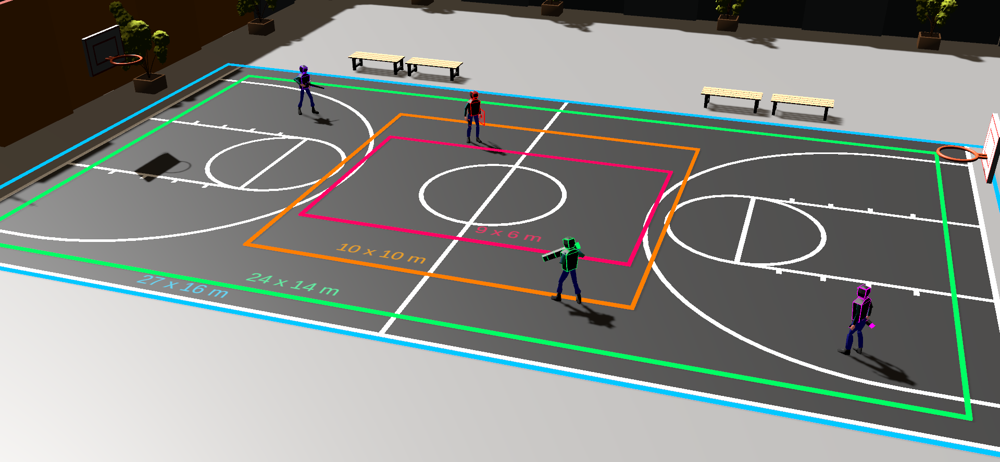
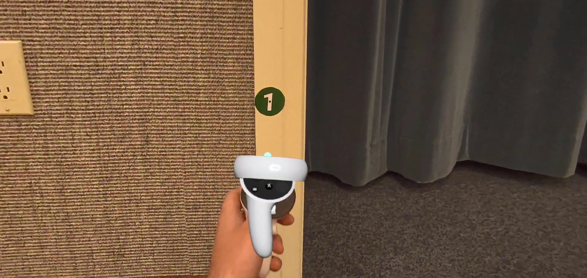
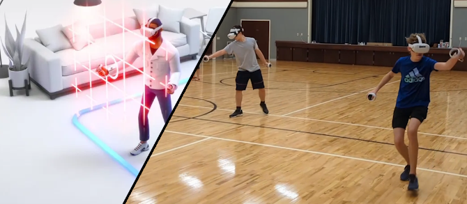
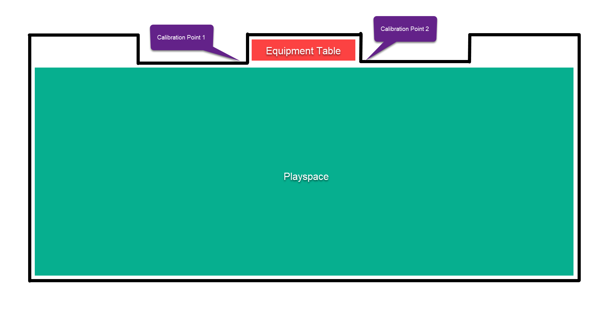
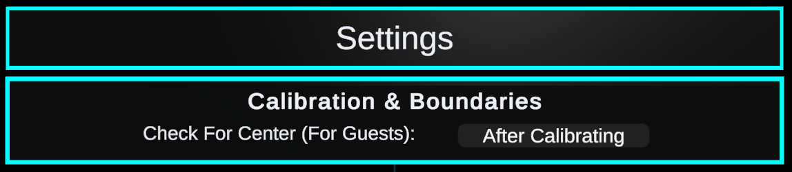
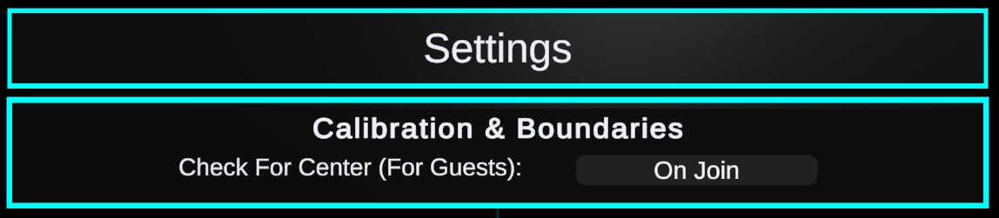
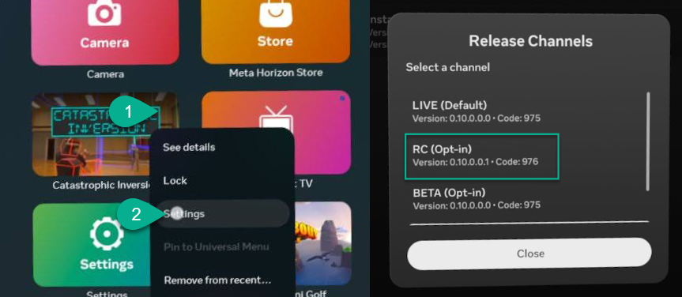
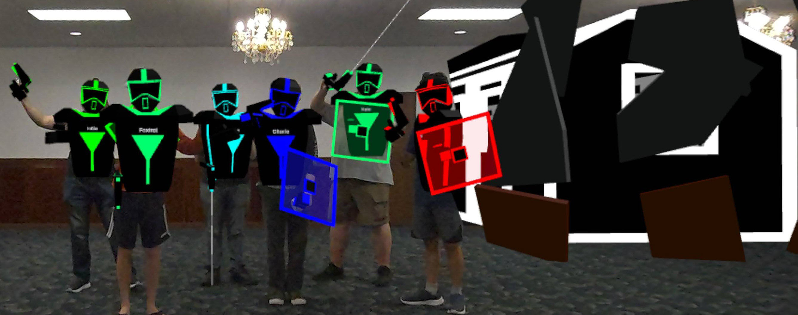

Expand headings for more info.Room Size
10x10 meter (33x33 feet) minimum. 24x14 meter (79x46 feet) recommended.

Room Setup
Clear the entire playspace from any potential tripping hazards. Ensure spectators are unlikely to walk through the space.
Mark two Calibration Points. (We recommend large stickers labeled one and two.) For the most reliable calibration, these should be several meters apart and a few inches different in height.

The game temporarily disables the Gudardian boundary to allow you to play in a large enough space.

Boundaryless mode will sometimes give a message saying You've walked too far. To avoid this, make sure the headset's starting point is close to the center of your space. If possible, store the headsets on a table in the middle of one of the long edges of your space.

With this arrangement, we'd recommend setting Check For Center in Settings to After Calibrating. This will check to see how well centered it is after calibrating and only bother the player if it's enough to cause a problem.

For rooms without enough side space for a side table...
Configure a small roomscale boundary in the center of your space and set Check For Center in Settings to OnJoin. This will make your guests check the center every time, which will help them quickly notice if it needs to be recentered, though a less-experienced guest may require assistance.

For situations where managing a center boundary is also inconvenient...
You can enable Developer mode and disable Physical Space Features to remove the pop-up entirely, but this will make the alignment less reliable and will need to be turned back on before playing any other games or you will risk an accident.
You do not have to be a developer to use developer mode. (You do need to create a placeholder development studio in Meta Quest, but it's not a lengthy process.) You can follow these instructions on the Meta Website.
Follow the in-game steps for marking off the corners to define your playspace.
Stationary/Roomscale Gameplay For Small Spaces
We have an alternate version of the game available that uses the Guardian boundary and is played with joysticks/teleporting. This version is available on the RC channel of the game. You can switch to the RC Channel from the game's settings in the App menu in the Meta Quest home. Once you've switched to this version, you will need to uninstall and reinstall the game for it to take effect.

We plan to merge both of these features in a future version of the game so you do not need to switch back and forth.
Special Considerations For Multiplayer
Multiplayer will auto-connect between devices on the same local network.
There are no official online servers. If you intend to play online, you will need to host your own server. Follow in-game instructions for port forwarding if necessary.
The host of a game selects Start a Game. All other players select Join a Game. Guest mode can be set in the settings of any headset to remove the Start a Game option and avoid confusion for the other players.
One headset can host one or two additional headsets as guests. A PC with the Steam edition of the game is recommended for hosting a large group. There is no hard limit, but about 8 players seems to be the best for a smooth game on our low-end gaming laptop... 8 players is a lot to manage anyways...
The Steam version also provides an automatic Spectator Camera for people to watch while they're waiting to play.
Your WiFi setup can limit capacity as well. Most networks should be fine for a small group, but we generally bring a pair of Wi-Fi 6 mesh routers with us wherever we play it just in case.
Our game engine doesn't seem capable of forcing the PC awake when running the server, so we've included a simple program if you need it called NoSleep.exe which will keep your PC awake while hosting. Remember to turn it off when you're done.
Compatible Headsets
We've tested the game on the three headsets listed below and it runs great on all of them. With each headset, you're also getting an amazing VR console that can also run a large collection of other games.
We are not currently scheduled for any upcoming events. Want us to join your gaming event? Reach out! info@toastidwaffel.com
Recent Events
R2V2
October 2024 & 2025: We were thrilled to be part of the Rock River Valley Video Game Convention (R2V2) in Rockford Illinois for two years in a row. We had a blast and were happy to see a ton of people enjoy the game.

Hear about the experience from the convention hosts.
About The Developer
We are an independent hobby studio operated by a solo developer with a little help from his friends.
We value our players' time and enjoyment. You will never find obtrusive ads, arbitrary paywalls, time-sucking grinds, LLM-Generated content, or unsustainable live services in any of our content.
The Team
Allen - Development
Emily - Business
Kevin - Soundtrack